So you want to become an MVP?
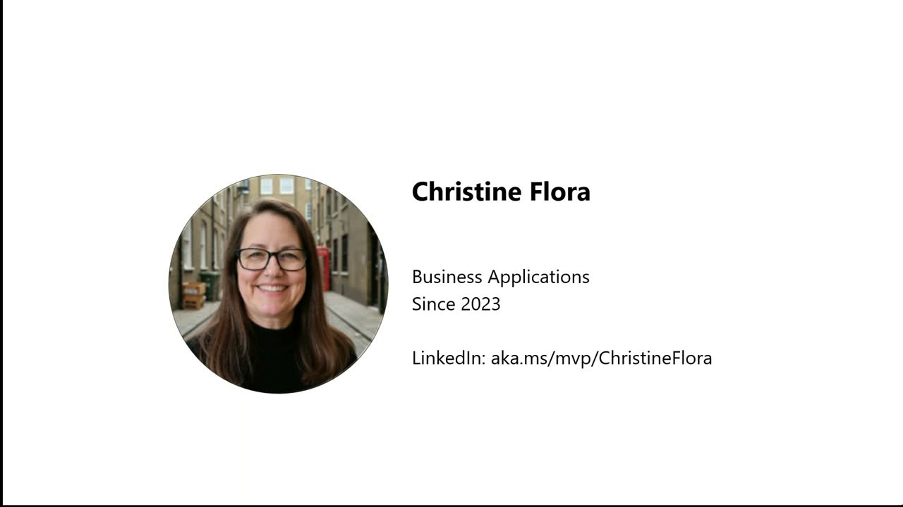
Official description
Passionate about sharing knowledge and making an impact in tech? Learn what it takes to become a Microsoft MVP from those who’ve done it and hear directly from MVP Program staff. Discover how to expand your influence, showcase your expertise, and practical tips for getting nominated. Walk away with a roadmap for growing your contributions and positioning yourself for MVP success. Seating for this session is first-come, first-served. Add it to your schedule to plan your day and arrive early to secure a spot.
Summary
Overview
A foundational session from Microsoft MVP Program staff explaining what the Most Valuable Professional award is, who qualifies, and how to get nominated. Betsy Weber and Fernanda Herger outline the program's philosophy of recognizing voluntary community leadership, joined by current MVPs who share their experiences (much of which was lost to onstage microphone failures).
Key announcements
- Three-step path to MVP (00:25:00
 m05s
m05s m10s
m10s p05s
p05s p10s) — To pursue the award: be an expert, do what you love, and let the program know, since nomination must come from a Microsoft employee or an existing MVP.
p10s) — To pursue the award: be an expert, do what you love, and let the program know, since nomination must come from a Microsoft employee or an existing MVP. - Program scale (00:01:46m05s
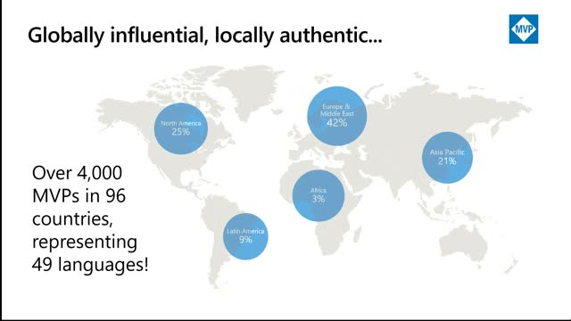
m10s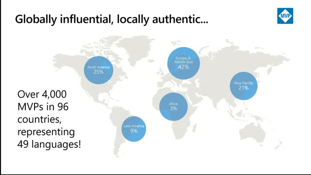
p05s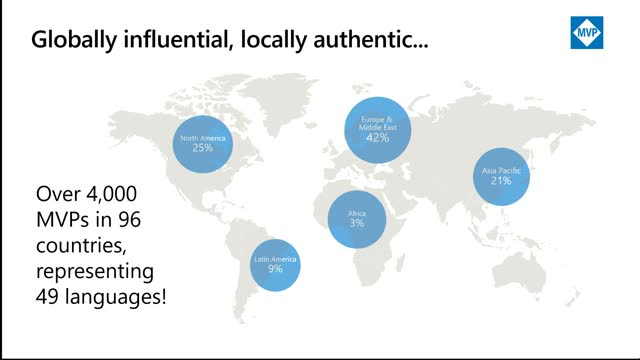
p10s) — The MVP program has run for over 30 years and now spans more than 4,000 award recipients across 96 countries and nearly 50 languages. - Build participation (00:07:09
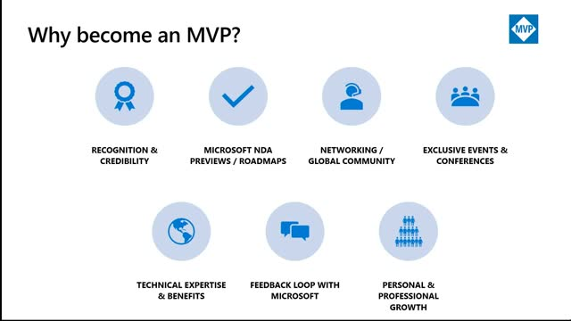
m05s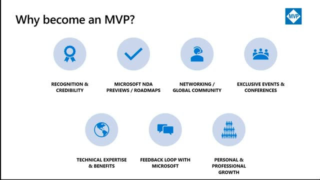
m10sp05sp10s) — Over 100 MVPs are contributing at this Build event as speakers and lab helpers. - Learn more resource (00:05:19m05s
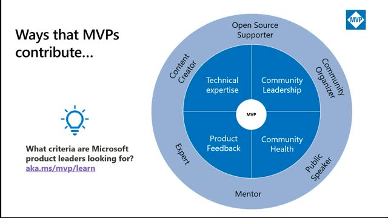
m10s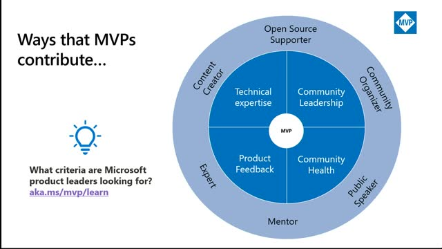
p05sp10s) — Staff directed attendees to aka.ms/mvp/learn for details on the program and how to contribute.
{kind=link}
{kind=link}
{kind=link}
{kind=link}
{kind=link}
{kind=link}
{kind=link}
{kind=link}
{kind=link}
{kind=link}
{kind=link}
{kind=link}
Topics covered
- Definition of the MVP award as recognition for community leaders who share technical expertise and real-world product knowledge, and who relay feedback to Microsoft.
- The program's "meet you where you are" philosophy: contribute through whatever medium suits you (blogs, podcasts, Twitch live streams, videos, open source) rather than any mandatory format.
- Eligibility: MVPs cannot be full-time Microsoft employees, though vendors may qualify; many former MVPs are later hired by Microsoft.
- Benefits of the award: recognition and credibility, NDA/roadmap access, direct connection to product groups, a global peer network, exclusive event invitations, and the annual MVP Summit in Redmond.
- Award categories: more than 100 technologies grouped by affinity (e.g., Business Applications covering Dynamics 365 and Power Platform; Windows and .NET under developer technologies).
- Sustaining the award: re-awarded MVPs are those who would continue their community work regardless of recognition, and balancing community contribution with work and personal life.
Notable quotes
"Be an expert, do what you love and let us know." — Betsy Weber
"The MVPs I see who get re-awarded every year are the ones who do what they love because they love doing it. They're not trying to get the MVP award and they would continue doing what they're doing if they got the award or not."
"MVPs are community leaders. They are different than media influencers. Our MVPs do this on their own time. This is not part of their day job." — Betsy Weber
Products and tools mentioned
- Microsoft MVP Program
- MVP Summit
- Dynamics 365
- Power Platform
- .NET
- Windows
- Twitch
Speakers featured
- Betsy Weber — Senior engagement lead, Microsoft MVP Program (10 years at Microsoft)
- Fernanda Herger — Principal customer experience program manager; former MVP, 15 years with the MVP program [inferred: transcript caption renders her surname as "Sariva"]
- Jeremy Sinclair — Microsoft MVP, Windows and .NET development
- Christine Flora — Microsoft MVP
- Stephen Simon — Microsoft MVP
Follow-up resources
- aka.ms/mvp/learn — Program overview and guidance on contributing
Frames
{kind=link}
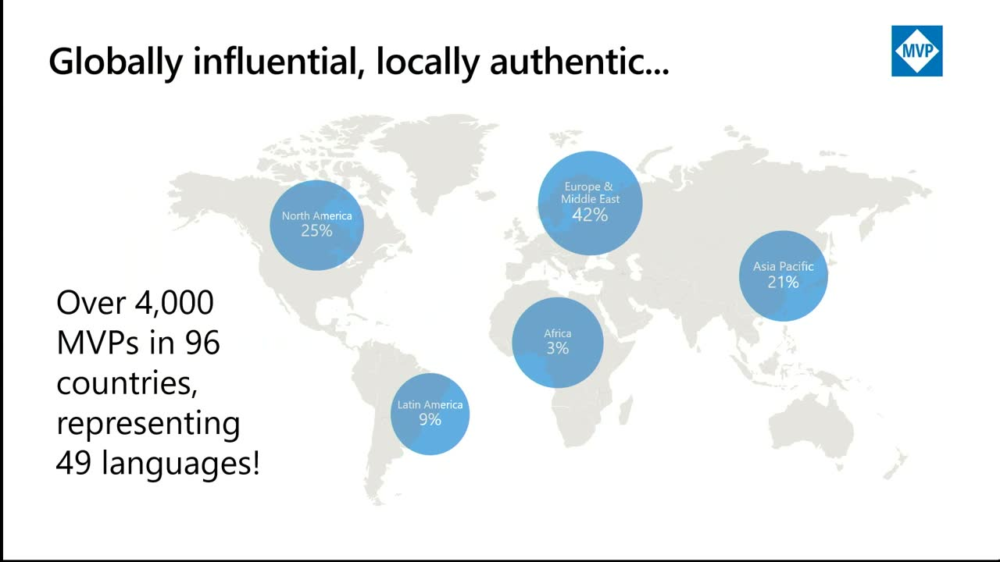
{kind=link}
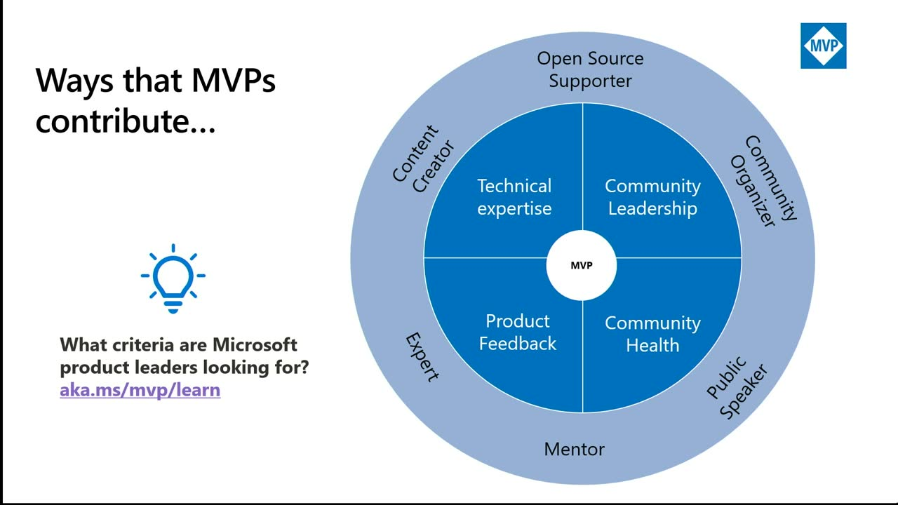
{kind=link}
{kind=link}
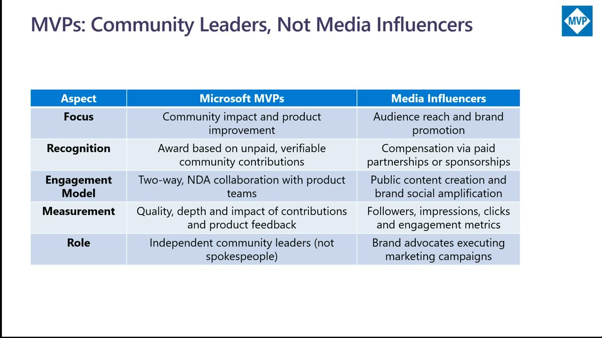
{kind=link}
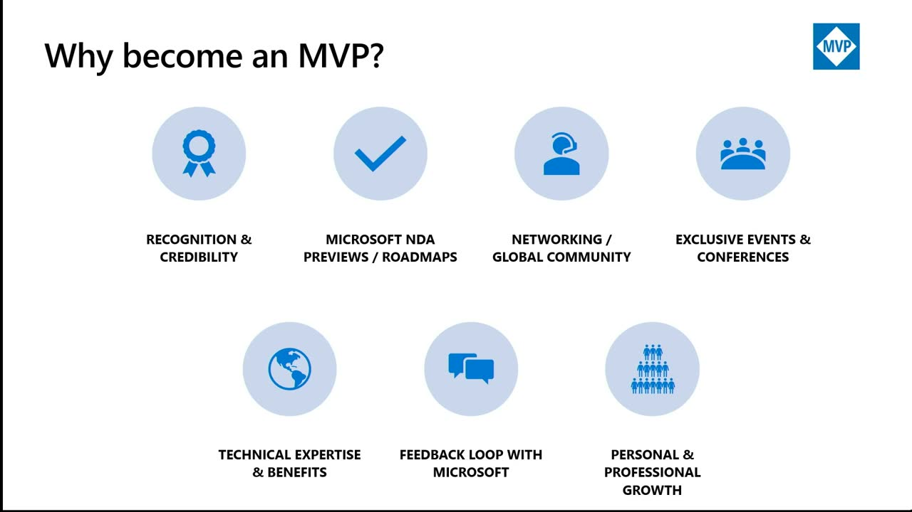
{kind=link}
{kind=link}
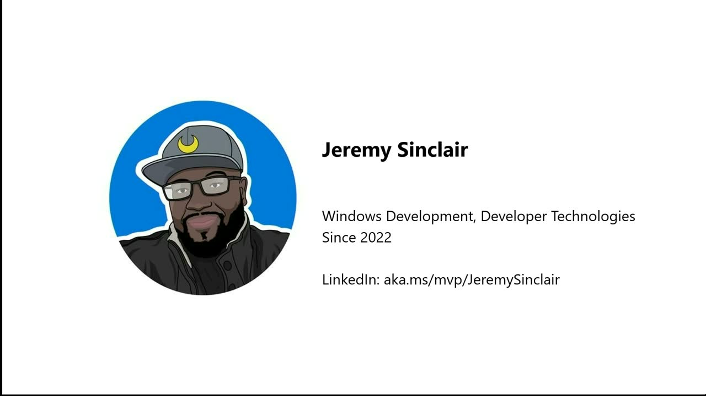
{kind=link}
{kind=link}
{kind=link}
{kind=link}
{kind=link}
{kind=link}
{kind=link}
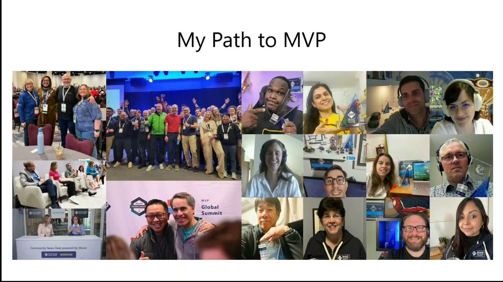
{kind=link}
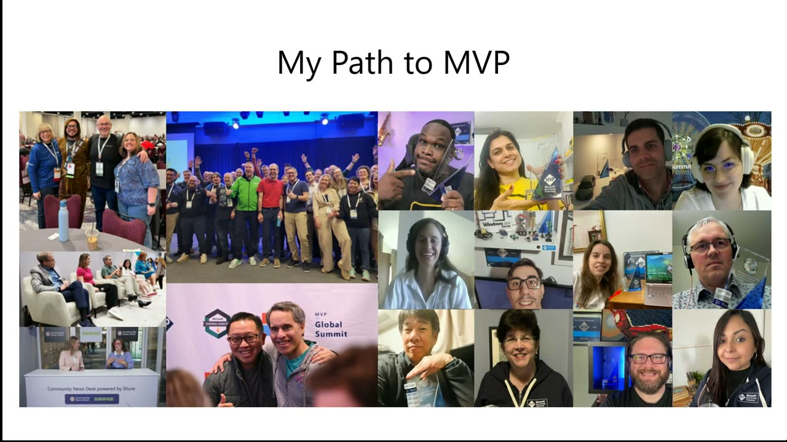
Transcript
Show / hide transcript (18,067 chars)
[00:00:02] Hi, welcome. [00:00:04] I'm Betsy Weber. [00:00:05] I'm a senior engagement lead at Microsoft, and I work [00:00:09] with the MVP program. [00:00:10] I've been at Microsoft 10 years as of this month [00:00:14] with me. [00:00:15] Thank you. [00:00:16] Yeah, with me I have. [00:00:18] Yeah. [00:00:18] Hi, everyone. [00:00:19] My name is Fernanda Sariva. [00:00:21] I am a former MVP. [00:00:22] Now, I would say now, but for the last 15 [00:00:25] years helping MVP program to grow to be an incredible [00:00:28] program that is today I'm a principal customer experience program [00:00:32] manager, which is a big title, represents a lot. [00:00:35] So we're pretty excited to talk to you all today. [00:00:38] And yes, let's go over Betsy. [00:00:41] All right, so let's talk about the MVP program. [00:00:45] So first of all, what does MVP stand for? [00:00:47] It stands for Most Valuable Professional and the Microsoft MVP [00:00:52] program. [00:00:52] It's an award that Microsoft gives to recognize exceptional community [00:00:57] leaders who share their passion with the community and their [00:01:01] technical expertise and their real world knowledge of Microsoft products [00:01:05] and services with others. [00:01:07] They also share their feedback with with Microsoft as well. [00:01:10] So the MVPS are community leaders who've demonstrated their knowledge [00:01:15] and understanding of the Microsoft products and services, and they've [00:01:19] actively contributed to the community. [00:01:21] Perhaps you, you know some MVPS or maybe you'll meet [00:01:24] some this week. [00:01:26] So they're very passionate about Microsoft products and technology. [00:01:31] Fernanda. [00:01:31] Yeah. [00:01:32] So a little bit about the landscape. [00:01:34] So MVP program has been around for a while who [00:01:36] who knows MVP program or have heard about it. [00:01:39] That's amazing. [00:01:40] So you should be make sure that I'm not talking [00:01:42] anything here that is going to say otherwise say otherwise. [00:01:46] So MPP program has been around for over 30 years. [00:01:49] We spread all around the globe. [00:01:51] So as you guys can see today we are more [00:01:54] than 4000 influencers and of course we just have an [00:01:57] incredible landscape covering 96 countries and a little over 49, [00:02:01] almost 50 languages. [00:02:03] So we have definitely looking for communities that are growing [00:02:06] and blooming in every single part of the world. [00:02:09] So we have an incredible coverability and we always invite [00:02:12] for those that are local, if you know MVPS, if [00:02:15] you know your community, if you're building your community, if [00:02:18] you already join a community. [00:02:20] So maybe you could be the 4000 and first person [00:02:23] in this number. [00:02:24] So please stay tuned. [00:02:25] We're going to share a little bit more about how [00:02:27] this community is actually engaged and what you need to [00:02:30] do to become an MVP. [00:02:33] All right, so how do you know if you belong [00:02:36] to the program and what you need to do? [00:02:38] So our our philosophy as a program is always, we [00:02:42] want to meet, meet you, meet you where you are. [00:02:45] So it's really important that once we start contributing to [00:02:49] the community, you will start doing what makes you happy. [00:02:52] What do you have more passion about? [00:02:54] What do you have a good knowledge about? [00:02:56] So this is what the foundation of a community, right? [00:02:58] We just want to understand that I'm doing something for [00:03:01] the greater good. [00:03:02] I'm sharing with my friends, I'm helping a community to [00:03:05] grow together. [00:03:05] I want to learn, I want to learn, I want [00:03:08] to get to know more about products. [00:03:09] I want to support my friends, I want to support [00:03:11] my community. [00:03:12] And of course, you have a little bit more of [00:03:15] those changes that come back to you either in a [00:03:17] professional or in a personal life as an incredible. [00:03:21] So to be considered an MVP, we always look for [00:03:24] those that have a really impactful and significant activities delivered [00:03:29] across a specific period of time. [00:03:31] Oh, I'm so sorry, my hair is here. [00:03:33] So main topics, of course, you have your composition of [00:03:37] a technical expertise. [00:03:38] So you know what you're talking about. [00:03:41] You want to know and get deeper into a specific [00:03:44] topic. [00:03:45] You are a leader. [00:03:46] And by leader I mean like OK, do I need [00:03:49] to be a top 100 influencers? [00:03:51] No, you just really need to do what actually have [00:03:54] passion and start building up your ecosystem. [00:03:57] Building up your group of friends or group of look [00:04:00] like minded folks that wants to grow together in your [00:04:03] community. [00:04:03] If you could start with your company, you could start [00:04:06] with the folks in this in this session, you could [00:04:09] exchange. [00:04:10] Or if you don't know how to start, you can [00:04:12] also always refer to the MVP website where you can [00:04:15] see one of those amazing 4000 leaders we have worldwide. [00:04:19] And in the other hand, how can you help us [00:04:22] help and build the products we have as a company? [00:04:26] So once you become an MVP, you're definitely going to [00:04:29] be exposed to a variety of products, to group engagements, [00:04:32] a variety of people, including all the speakers you can [00:04:36] see here and much more across Microsoft where you can, [00:04:39] you have your experience, you can share what you learn, [00:04:43] you can troubleshoot, you can provide feedback, you can contribute [00:04:47] to the future of our solutions, and of course, maintain [00:04:50] this whole circle feeding and growing over time. [00:04:53] So we're really passionate about this. [00:04:56] You don't need to be just a Microsoft person. [00:04:58] You can be an expert in open source. [00:05:00] You can be an expert in content creation. [00:05:03] I love to write blogs, I write it to create [00:05:06] videos. [00:05:06] I like to do any form of activity that can [00:05:09] engage and bring more people in touch with the community. [00:05:12] So there's always a way for you to find way [00:05:15] to contribute. [00:05:16] And if you want to know more, of course, I [00:05:19] want to just call out the AKA that is right [00:05:22] there AKA dot MS/MVP slash learn where you can learn [00:05:25] more about the MVP program and how to contribute more. [00:05:29] So I will pass along to Betsy that can tell [00:05:31] a little bit more about what makes an MVP. [00:05:34] OK Fernanda, if I want to be an MVP, do [00:05:36] I have to have a blog? [00:05:39] That's a good start, not necessarily a mandatory thing for [00:05:42] you to do it. [00:05:44] If I want to be an MVP, do I have [00:05:45] to have a podcast? [00:05:47] You don't have to have a podcast, let's say. [00:05:49] If that's your passion, yes, you can have a podcast. [00:05:51] Otherwise, that's not a mandatory thing, OK? [00:05:55] Do I have to contribute to open source? [00:05:57] If that's your passion, again, you'll have opportunity to contribute [00:06:00] to open source, so then answer is yes. [00:06:03] Got it. [00:06:03] So we want you to contribute to the community in [00:06:07] the ways that you want to contribute. [00:06:09] If you want a blog, blog, if you want a [00:06:12] podcast, podcast, if you want to live stream on Twitch [00:06:15] and show how your vibe coding, do that. [00:06:19] Give back to the community in the way that you [00:06:21] want to. [00:06:22] So MVPS are community leaders. [00:06:25] They are different than media influencers. [00:06:28] Our MVPS do this on their own time. [00:06:30] This is not part of their day job. [00:06:32] This is not part of their, you know what they [00:06:35] get paid for in their profession. [00:06:38] They do this in their own time because they're passionate [00:06:41] about community and they want to help others. [00:06:44] So this is just Microsoft's way of giving recognition and [00:06:48] a thank you to those community leaders. [00:06:53] So what will you achieve if you become an MVP? [00:06:56] Why? [00:06:57] Why become an MVP? [00:06:59] Well, with with the MVP award, you will get that [00:07:02] recognition and that credibility, right? [00:07:05] Like becoming an MVP gives you that badge of honor. [00:07:09] It can open up doors for you. [00:07:11] We've got over 100 MVPS participating at Build Speaking and [00:07:14] doing a variety of different, like helping with labs and [00:07:18] doing a variety of other activities. [00:07:22] One of the big things is you get that NDA [00:07:25] information before the public gets it. [00:07:29] You get connected to the product groups, They're showing you [00:07:33] the road maps and giving you that insider information. [00:07:37] And it's also a great way for you to give [00:07:39] feedback to those product groups. [00:07:41] You know, when you're in the Microsoft products and services [00:07:44] all day and you've got clients, you get to share [00:07:48] what they're running into, what you're experiencing and, and share [00:07:52] that feedback. [00:07:54] Like Fernandez said, you get to join this global community [00:07:59] of 4000 plus MVPS. [00:08:01] Whenever I travel somewhere, there's always an MVP that I'll [00:08:04] know and I'll be able to meet up with. [00:08:08] You'll get exclusive invites for events and conferences. [00:08:11] Every year we have an MVP summit and that's where [00:08:14] MVPS get to come to campus in Redmond and they [00:08:17] get to meet with the product groups in person or [00:08:20] online and and hear what's coming up next and share [00:08:24] that feedback. [00:08:26] Also, it'll help you grow personally and professionally and we'll [00:08:30] have some MVPS up here share more about that. [00:08:35] Right, so enough of from Fernanda and I, let's talk [00:08:39] to some real MVPS we've got Jeremy Sinclair. [00:08:42] Jeremy, do you want to introduce yourself? [00:08:48] Well, we don't hear you. [00:08:49] Hold on. [00:08:50] Let me see a little louder. [00:08:52] Does that microphone work maybe OK? [00:09:07] Now, Yeah, all right, we're going to get there. [00:09:16] OK. [00:09:17] In the interim, well, in a moment, we will have [00:09:27] MVPS join us. [00:09:30] And they'll share. [00:09:32] They're almost there into. [00:09:33] Becoming an MVP and how how they got started with [00:09:36] the community. [00:09:37] If you guys can, can you, can you speak closer? [00:09:40] Let's see if that helps. [00:09:41] No, no. [00:09:43] All right. [00:09:43] Well, in the meantime, I prepare some jokes here for [00:09:46] you guys. [00:09:47] Let me, I'm kidding. [00:09:51] We can also take some questions from the audience. [00:09:57] Does anybody have any questions and I'll relay them? [00:10:00] That's a good call. [00:10:01] If you guys have any questions in the meantime, we [00:10:03] can just go for it. [00:10:04] Let's see, let's. [00:10:05] Talk about how you become an MVP, Fernanda. [00:10:08] So if you are a Microsoft employee, can you be [00:10:11] MVP? [00:10:12] Yeah, that's a very good question. [00:10:13] I think that's important to understand that MVP is a [00:10:17] voluntary and totally independent of Microsoft labels or totally independent [00:10:22] of Microsoft eligibility in terms of being an employee. [00:10:26] So you cannot be an employer, You cannot be an [00:10:29] employee at Microsoft or not a vendor at Microsoft. [00:10:32] You can actually, you can be a vendor at Microsoft, [00:10:36] but everything happens for those that do not, are not [00:10:39] full time employees at the company. [00:10:41] So we really appreciated those that are doing everything and [00:10:45] learning in the community. [00:10:46] And then sometimes in the future, lots of MVPS, including [00:10:50] myself, tend to be hired by the company. [00:10:52] I was hired 14 years ago. [00:10:54] I was a former MVP myself. [00:10:56] So I share a little bit more of both passions [00:10:59] and both sides. [00:10:59] But seems like you have microphone back. [00:11:02] Yes. [00:11:04] Or maybe not, Do we? [00:11:06] Yes. [00:11:18] You might need to get closer to them. [00:11:23] That's good. [00:12:25] Yeah, I'd love that she mentioned I am biz apps [00:12:28] I'm in Windows development and while this all might be [00:12:30] a little what what do they mean by that? [00:12:33] So MVP program organizes and covers now more than 100 [00:12:36] technologies and they are usually grouped by affinity. [00:12:40] So when she said this apps likely she's connected to [00:12:43] Dynamics 365, she's connected to compiled Studio, she's connected to [00:12:47] your power platform. [00:12:49] Whereas Windows our friend right there is more under the [00:12:52] development side of the Windows and aswell.net because he also [00:12:55] holds the developer technology. [00:12:57] So of course we all invite you to check the [00:13:00] MVP website where you can see the list of all [00:13:04] products and how they are organized by what we call [00:13:07] award categories. [00:13:09] So you want to start with the questions. [00:13:11] We have a few questions to our friends here. [00:13:13] So for our audience members who might not be involved [00:13:17] in the community at all yet, how, how did you [00:13:20] get involved in the community, Christine? [00:13:29] It's not working again, sorry. [00:13:39] Oh well. [00:14:59] Thank you. [00:14:59] Oh, that's interesting. [00:15:00] There's always a beginning for everything. [00:15:02] And tell me, once you became an MVP, if anything, [00:15:05] what has changed in your personal and professional life? [00:16:32] I would say the same thing for me. [00:17:30] That's great. [00:17:31] Thank you. [00:17:32] So what advice would you give to somebody who they [00:17:36] haven't been involved in the community yet, what they want [00:17:40] to be? [00:17:41] How do you how do you even get started in [00:17:43] the community? [00:17:45] Those are very similar. [00:17:50] Ed Sheeran. [00:19:33] I I love that the MV PS I see it, [00:19:41] it is a year long award. [00:19:47] The MV PS I see who get re awarded every [00:19:50] year are the ones who do what they love because [00:19:53] they love doing it. [00:19:54] They're not trying to get the MVP award and they [00:19:57] would continue doing what they're doing if they got the [00:20:01] award or not. [00:20:02] I think that's a great way to. [00:20:03] Yeah, and that looks like a lot of work. [00:20:07] So everybody thinks like, Oh my God, how much is [00:20:10] enough? [00:20:10] Or how much I need to really put in in [00:20:12] passion into the community to make to make the cut [00:20:16] to be an MVP. [00:20:17] So how much is is what is enough? [00:20:20] So how do you actually balance your work and life [00:20:25] and community? [00:20:26] So give us a little view of like what your [00:20:28] day looks like when you put a community into your [00:20:31] day by day. [00:21:20] That's good about you, Jeremy. [00:22:47] Thank you. [00:22:47] OK, So what is the most rewarding part of being [00:22:52] an MVP? [00:23:58] Say that like I said before, just. [00:24:55] Thanks, Christine and Jeremy. [00:24:57] All right, so wrap it up. [00:25:00] There are three simple steps if you want to become [00:25:04] an MVP. [00:25:06] Be an expert, do what you love and let us [00:25:10] know. [00:25:11] To be an MVP, you have to be nominated either [00:25:15] by a Microsoft employee or by an existing MVP. [00:25:19] So our best advice is do we love, share that [00:25:23] and contribute to the community. [00:25:26] Yeah. [00:25:27] Let me just go quickly. [00:25:29] We just have 20 seconds left and we really appreciate [00:25:32] everybody's participation in this session today. [00:25:35] And if you have any questions, we also going to [00:25:38] be here today. [00:25:39] And tomorrow we have two more sessions the same like [00:25:41] this and Betsy and I will be around. [00:25:42] So feel free to reach out and we can help [00:25:44] with your questions. [00:25:45] Yeah. [00:25:46] Thank you.